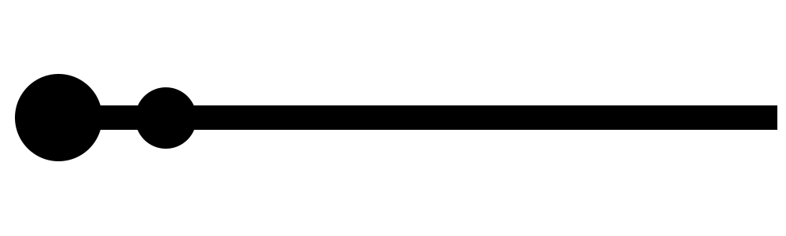

Origami people
Until now, artisans often re-sketched images of people with pictures. There are also many people who use sculptural artwork to sketch images of people. So is Origami artisans use paper material to create works of art depicting human activities. Here are a few of the representative pieces we have collected.
1. A Bird on Hand
 click to watch image source
click to watch image source
A Bird on Hand designed by Watanabe Dai - Folded by Adriano Davanzo. Paper rice + banana 40x40 cm - 129 steps.
2. Iron Man
 click to watch image source
click to watch image source
Iron Man designed by Yoo Tae Yong - Folded by J.W Park. Probably the best version of this model.
3. Ribbon dance
 click to watch image source
click to watch image source
Ribbon dance is Series of models created for the exhibition "Transformed reality" in -EMOZ- Zaragoza-Spain. Banana fiber paper 27 * 27 cm.
4. Archangel St Michael
 click to watch image source
click to watch image source
Archangel St Michael designed and folded by Tran Trung Hieu. Very beautiful art form Viet Nam.
5. Hawk eyes
 click to watch image source
click to watch image source
Archangel St Michael designed and folded by Tran Trung Hieu. The last photo of this model.
6. Kannon(观音)
.jpg) click to watch image source
click to watch image source
Designed by : Chen Xiao. Uncut 90x90cm White hanji (Korean Paper). Time spent : 20 hours. Completed model size : 25 cm.
See more beautiful ART